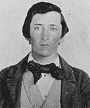

|

|

|
|
|
William Clarke Quantrill was a captain of the Confederate
Partisan Rangers and the infamous leader of a guerilla band
known as "Quantrill's Raiders". Born in Canal Dover, Ohio
on July 31, 1837, he was a schoolteacher before moving to
the Kansas territory in 1857. Bitter antagonism between
abolitionists and pro-slavery factions characterized Kansas
of the 1850's, and Quantrill joined the pro-slavery "border
ruffians" after a series of odd jobs in Utah and Colorado.
Operating under the alias Charley Hart, Quantrill switched
loyalties to "jayhawking" abolitionists in Lawrence, Kansas,
where he was wanted by authorities for kidnapping and theft.
His ambush of his own band at Morgan Walker's farm in
Jackson County, Missouri, however, established him firmly in
the pro-slavery faction of the "bushwhackers."
Quantrill's growing group of followers was loosely
affiliated with the Missouri State Guard commanded by
Confederate Major General Sterling Price. Quantrill's
cavalry company also participated in the Battle of Wilson's
Creek on August 10, 1861, in which the Confederate army
under Brigadier General Ben McCulloch defeated the Union
forces under Captain Nathaniel Lyon. Quantrill's Raiders
continued to aid the Confederate cause throughout the war,
largely by keeping Union troops distracted and away from the
larger Confederate armies.
Officially made a Captain of the Partisan Rangers on
August 15, 1862, Quantrill often referred to himself as a
Colonel, though his followers usually numbered from a dozen
to a couple hundred. Some of the most prominent members of
the band included George Todd and Cole Younger, and later
William "Bloody Bill" Anderson and Frank and Jesse James.
The raiders were successful in looting and burning several
small towns and garrisons on the Kansas-Missouri border, and
in murdering Union sympathizers, military and civilian
alike. They sacked the towns of Aubry, Olathe, and
Shawneetown in Kansas, and were briefly assigned to Colonel
Joe Shelby's regiment in Arkansas.
The best-known exploit of Quantrill's Raiders was the
destruction of Lawrence, the center of abolitionist activity
in Kansas, on August 21, 1863. Quantrill gathered a force
of about 450 men, the largest guerrilla force organized at
one time in the Civil War, for what is now considered the
most terrible massacre of the entire war. The raiders
murdered 150 men and burned and looted almost all of the
town, possibly in retaliation for the forced deportation of
family members and other sympathizers in Missouri, or for
the deaths of female relatives who were killed when the
building in which they were forcibly held collapsed.
The Raiders headed south for winter quarters, routing a
small federal force in Baxter Springs, Kansas, on their way
to Texas. While encamped in Mineral Creek, Texas, during
the winter of 1863-1864, tensions among leaders led to a
breakdown in group cohesion. After returning to Missouri in
April 1864, a quarrel between Quantrill and Todd resulted in
Quantrill's leaving the Partisan Rangers and Todd's taking
over the leadership. However, Quantrill, Todd, and Anderson
briefly reunited to support Sterling Price's invasion of
northern and western Missouri in the summer of 1864, during
which Todd and Anderson were killed in action. This last
major Confederate assault in Missouri dissolved in failure,
and the effectiveness of guerrilla activities decreased as
well.
Quantrill led a small band into Kentucky, where Maj. Gen.
John M. Palmer sent out a group of federal "bushwhackers"
against him, led by Edwin Terrill. In an ambush at
Wakefield's farm near Bloomfield on May 10, 1865, Quantrill
was disabled by a shot to the spine, and was later taken to
a military hospital in Louisville. He died there on June 6,
1865, and was buried in an unmarked grave. A strange series
of events, however, later brought his body to rest in Canal
Dover (Dover), Ohio, while the disintegrated remains of his
ribs and spine were left in Louisville and his arm and
shinbone were eventually buried in Higginsville, Missouri.
William Clarke Quantrill was considered to have
leadership abilities, a calm disposition under pressure, and
a tendency towards ruthlessness. His activities are an
example of guerrilla warfare during the Civil War, and
illustrate the scale and nature of hostilities between
pro-slavery and abolitionist forces in Kansas and Missouri
in the 1850's and 1860's.
Source: Joan Waugh, ed., Facts on File Encyclopedia of American
History: Civil War and Reconstruction, 1856 to 1869 (New York: Facts on
File, 2003), 285-286.
|